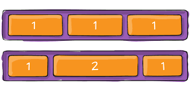

1-Github flow
Är en arbetsflöde som man kan arbeta med grupp men kan även tillämpas när man jobbar själv :
Med github flow man kan :
- skappa en ny fil.
- Öppna en pullrequest när man arbeta med grupp.
- Gör ändring och lägg en commit
- Review
- Merge

2-Flexbox
Flexbox är ett modernare sätt att design på webbsidor och den enklaste metoden som ger bra
När man använder flexbox måste skapa container som kan ordnas horisontellt eller vertikalt
som vi kan använda i CSS filen.

DOM
(DOM) Document Object Model representerar innehållet i HTML dokumentet i en trä.Med hjälp
av Javascript kunna justera trädet och skapa dynamiska.Det handlar alltså om att vi kan ta bort,
komma åt, förändra och lägga till element.

Fin kod
ÄR att man skriver tydligt föratt förstå när man läser och formatering dokument.Det är viktigt att
kommentera också när vi skriver kod för att när det visar fel sökning vi kan lät hitta felen melan
koden och det blir lättare när någon annan ska läsa och förstå.
Ramverk
Ramverk är en kod som någon annan som kodat.Det är bra att använda ramverk för att man vinner mycket tid.
Nackdelen är att ramverken ibland blir stor och tungt ochblir svårt att ändra.
- Bootstrap:Skapades Bootstrap av företaget Twitter bygger på Javascript och syftar till att enkelt bygga responsiva användarmiljöer.
- React:Skabades React av företaget FaceBook det används för att bygga så kallade
“single page applications” . Är ett javascriptramverk.
Referans lista
- Ramverk
- W3school